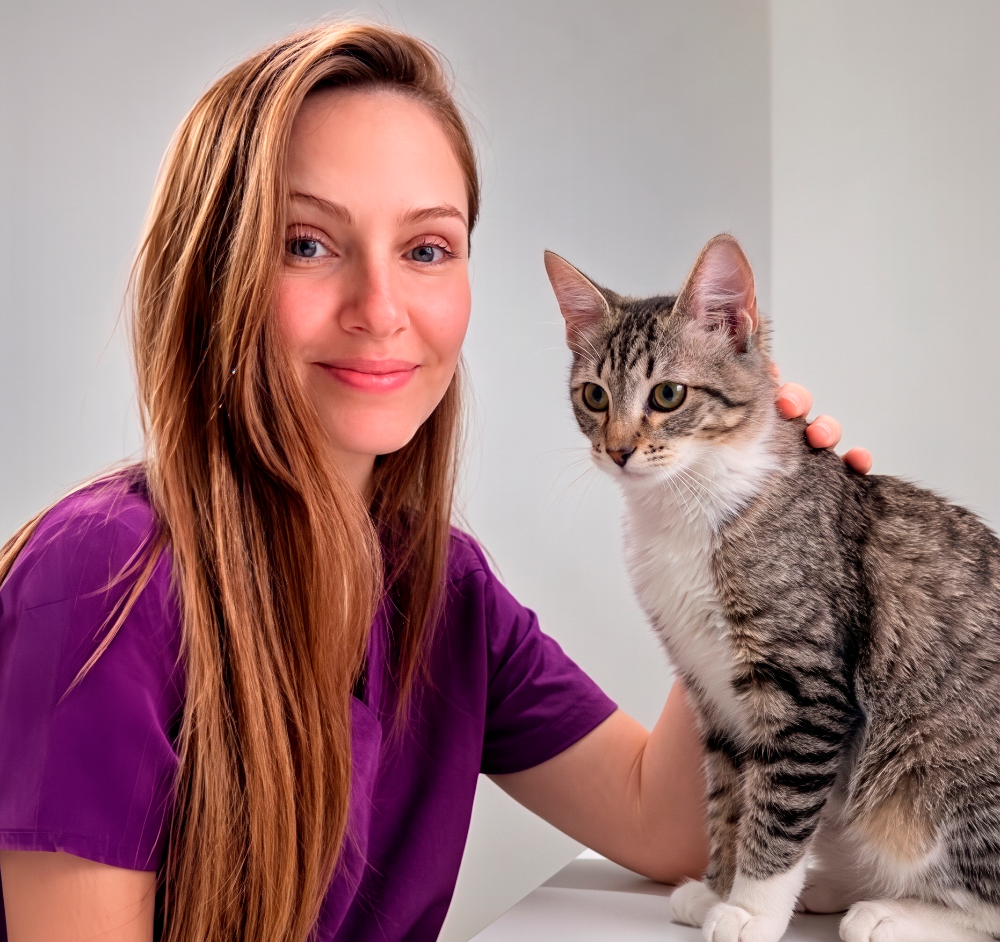
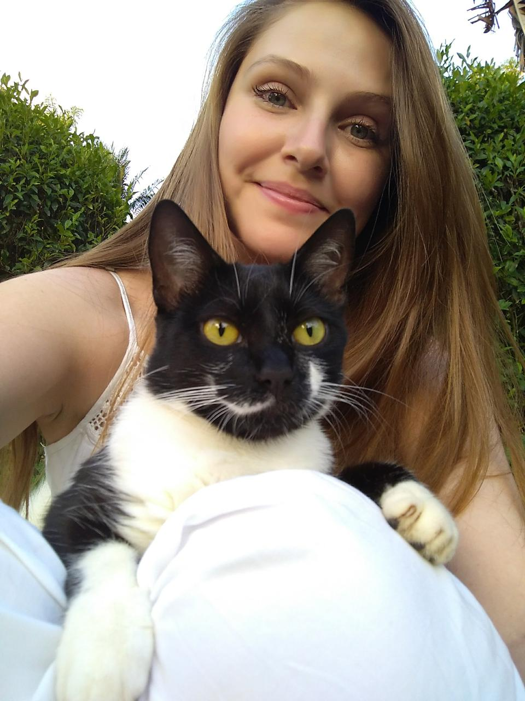

Consulta Clínica
Avaliação completa no conforto do lar, respeitando o tempo e o histórico de saúde do seu animal.
Cuidado veterinário para cães e gatos no conforto de casa, com atenção, carinho e acompanhamento individualizado.
Bruna Bacher | Médica-Veterinária | CRMV-SP 40545
Tudo o que seu pet precisa, sem o estresse da sala de espera.
Avaliação completa no conforto do lar, respeitando o tempo e o histórico de saúde do seu animal.
Imunização ética e segura (V8/V10, antirrábica e felinas) mantendo a rigorosa cadeia de frio.
Manejo Cat Friendly especializado no território do seu gato, minimizando qualquer estresse.
Check-ups preventivos e práticos para casas com vários cães e gatos em uma única visita.

Bruna Hergert Bacher | Médica-Veterinária CRMV-SP 40545
Com 9 anos de atuação em Limeira, atendimento especializado em clínica médica de cães e gatos e dedico minha carreira a proporcionar saúde com respeito e empatia. Acredito que a ciência aliada ao conforto do lar resulta na melhor experiência para sua família.
Área de Atuação: Atendimento veterinário domiciliar exclusivo para toda a cidade de Limeira/SP.
Sim, o atendimento domiciliar cobre toda a área urbana e condomínios da cidade de Limeira/SP.
Seu animal passa por uma avaliação clínica completa. Estando saudável, aplicamos vacinas éticas/importadas, que são transportadas em caixas térmicas rígidas para garantir a eficácia.
Sim! Como especialista em felinos, recomendo fortemente o atendimento em casa para evitar o estresse crônico da caixa de transporte e da clínica tradicional.
Fale diretamente comigo no WhatsApp e vamos encontrar o melhor horário.